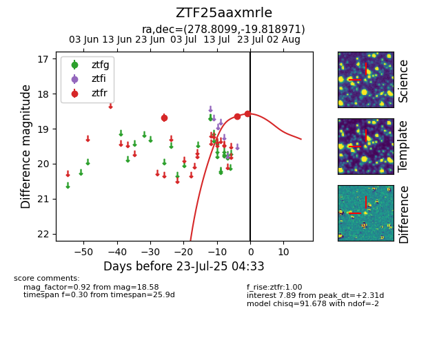

Target ZTF25aaxmrle at 2025-07-23 12:37, see:
FINK: fink-portal.org/ZTF25aaxmrle
Lasair: lasair-ztf.lsst.ac.uk/objects/ZTF25aaxmrle
ALeRCE: alerce.online/object/ZTF25aaxmrle
alt names
ZTF25aaxmrle (ztf,fink)
coordinates:
equatorial (ra, dec) = (278.8099,-19.81897)
galactic (l, b) = (13.4465,-5.47859)
photometry
last ztfr=18.58
3 ztfr detections
